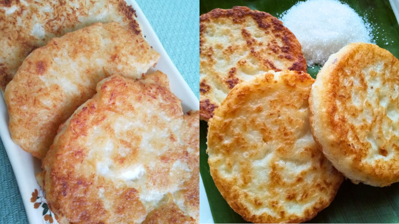

Bahan-bahan:
- 2 cawan kelapa parut
- ½ cawan tepung gandum
- Sedikit santan
- Sedikit air kelapa (kalau tiada, boleh guna air biasa)
- Secubit garam
Cara penyediaan:
- Satukan semua bahan di atas kecuali air kelapa.
- Gaul rata, kemudian tuang air kelapa sedikit demi sedikit. Pastikan adunan tidak terlalu cair.
- Panaskan kuali dan sapukan sedikit minyak.
- Cedok satu senduk adunan, tuang ke dalam kuali dan ratakan nipis.
- Masak sehingga bahagian bawah garing, kemudian terbalikkan.
- Bila kedua-dua belah masak sempurna, angkat dan hidangkan panas-panas.